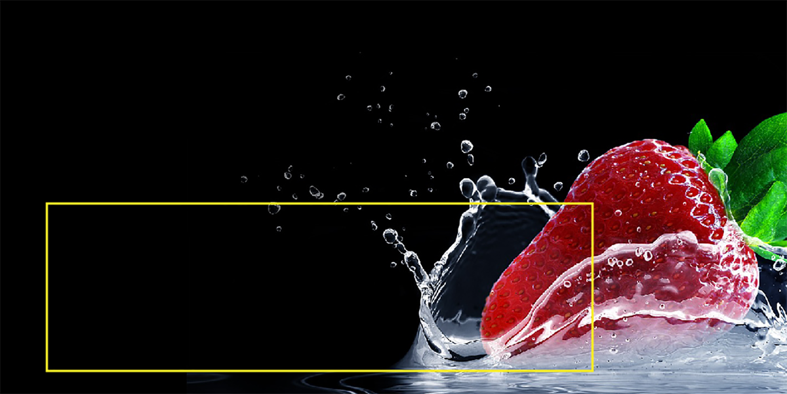

flex font レイアウト編集モードの練習用にお使い下さい。
https://flex-font.com/how_to/

文字画像のテキスト化で、デザインを保ったまま!!
ランディングページの
SEO対策!!
★メリット：flex-font-layout.jsを使うと
縦書きも出来る
・画像上にテキストを配置出来る
・画面幅が変わってもテキストの相対位置がズレない
・デザインの自由度が増す
・選択出来るテキストだから、SEOに有利（選択してみて下さい）
・画像だけのLPよりGoogle広告の品質スコアが高くなる